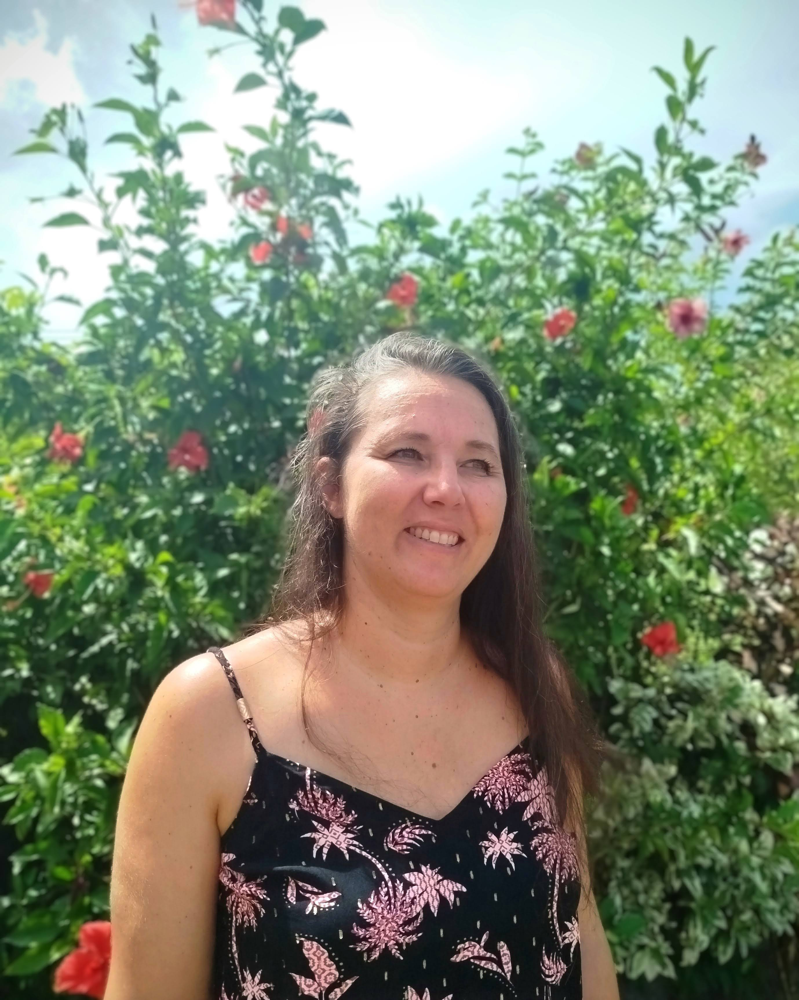

Je suis Adeline Guillot Gueret, enseignante spécialisée de formation, formatrice & superviseure indépendante en Guadeloupe.
J'accompagne les enfants, les parents et les équipes pédagogiques et du médico-sociale grâce à un soutien scolaire adapté, de la guidance parentale, des formations et des supervisions professionnelles.
Mon objectif : favoriser la réussite et l'inclusion de chaque enfant.
Spécialisée dans les troubles du neurodéveloppement (TND) et la déficience visuelle, j'interviens auprès d'enfants présentant diverses difficultés pour favoriser leur inclusion et leur réussite scolaire.
Enfants déficients visuels avec troubles associés
Accompagnement et inclusion des enfants ayant un TSA
Accompagnement et inclusion des enfants ayant un TDA/H
Soutien adapté aux enfants avec un TDI
Accompagnement scolaire personnalisé
Stratégies et outils pour l'autorégulation

Je m'appelle Adeline Guillot Gueret, enseignante spécialisée de formation et aujourd'hui j'accompagne les enfants à besoin particuliers, leurs parents ainsi que les professionnels éducatifs et des établissements médico-sociaux.
Diplômée en Activité Physique Adaptée (Université Claude Bernard Lyon 1), j'ai très vite orienté ma carrière vers l'accompagnement des enfants à besoins spécifiques. J'ai ensuite poursuivi ma spécialisation en obtenant le CEAGA DV, me permettant de travailler auprès d'enfants déficients visuels, avec des troubles associés tels que l'autisme.
Pendant plus de 10 ans, j'ai exercé en établissement médico-social où j'ai pu accompagner de nombreux enfants et leurs familles. Cette expérience m'a permis d'acquérir une vision globale des besoins éducatifs particuliers, et surtout de développer une approche centrée sur la collaboration entre enfants, parents et équipes éducatives.
Désireuse d'approfondir mes connaissances, j'ai ensuite suivi plusieurs formations complémentaires dans le domaine des troubles du neurodéveloppement (TND), de l'autorégulation et de l'analyse de pratiques professionnelles (Epsilon à l'école, Epsilon Melia, A+ autoregulation, ENSEIS Management).
Ces apprentissages m'ont conduite à élargir mon champ d'action :
Aujourd'hui, installée en Guadeloupe, j'interviens auprès des enfants, de leur famille, des établissements scolaires et médico-sociaux pour transmettre des outils concrets et construire, ensemble, des environnements plus inclusifs, bienveillants et adaptés.
Ma conviction : chaque enfant a un potentiel, et c'est en créant des ponts entre parents, enseignants et professionnels que nous pouvons l'aider à s'épanouir et à progresser.
En tant qu'enseignante spécialisée de formation, j'accompagne enfants, parents et professionnels afin de favoriser la réussite et l'inclusion scolaire, en particulier auprès des enfants présentant des troubles du neurodéveloppement (TSA, TDI, TDA/H...), une déficience visuelle ou des difficultés d'apprentissage.
Accompagnement individualisé pour enfants à besoins éducatifs particuliers.
En complément de ma formation d'enseignante spécialisée et de mes certifications obtenues auprès d'Epsilon à l'école, j'ai développé des compétences précises pour accompagner les enfants dans leurs apprentissages :
✓ Évaluation personnalisée des compétences scolaires (points forts et axes de progrès)
✓ Élaboration d'un plan de soutien adapté aux besoins de l'enfant
✓ Mise en place d'outils pédagogiques différenciés et concrets
✓ Suivi individualisé pour redonner confiance et plaisir d'apprendre
Enfants avec besoins particuliers (TSA, TDI, TDA/H, Troubles des apprentissages).
Soutien aux parents dans la compréhension des troubles du neurodéveloppement (TND) et des difficultés scolaires.
✓ Temps d'écoute et d'échanges avec les familles
✓ Conseils pratiques pour accompagner l'enfant au quotidien
✓ Stratégies éducatives pour développer l'autonomie et la coopération
✓ Mise en place d'outils favorisant la coopération et l'équilibre familial
✓ Soutien à la coéducation en lien avec l'école et les partenaires
Parents souhaitant mieux comprendre les besoins de leur enfant et disposer d'outils concrets pour l'aider.
Mon parcours m'a permis de développer une expertise solide dans l'accompagnement des équipes éducatives et médico-sociales.
✓ Formatrice spécialisée : Animation de sessions autour des TND, TSA, autorégulation et inclusion scolaire, en alliant apports théoriques et outils concrets issus de mon expérience de terrain.
✓ Superviseure en école d'autorégulation : accompagnement des professionnels (en collaboration avec A+ Autorégulation et Epsilon à l'école) pour favoriser la régulation émotionnelle, la coopération et le bien-être des élèves.
✓ Supervision d'équipes pluridisciplinaires : soutien au développement des compétences relationnelles, à la réflexion collective et à l'analyse de pratiques dans une démarche bienveillante et constructive.
✓ Coordonnatrice d'une Équipe Mobile d'Appui à la Scolarisation (EMAS) : travail de liaison entre enseignants, AESH, familles et professionnels médico-sociaux pour renforcer l'inclusion et la continuité des parcours scolaires.
Équipes éducatives, enseignants, AESH, éducateurs, professionnels du médico-social souhaitant renforcer leurs compétences et améliorer leurs pratiques au service de l'inclusion.
Formée à l'animation de groupes d'analyse de la pratique professionnelle par Epsilon Melia, j'accompagne les équipes dans une démarche réflexive, collaborative et bienveillante.
✓ Mise en place d'un espace sécurisé où chacun peut partager ses expériences
✓ Développement de la résolution collaborative de problémes et du leadership coopératif
✓ Amélioration du bien-être professionnel grâce à l'écoute active et à la recherche collective de solutions
✓ Renforcement de la cohésion et du sens dans les pratiques d'accompagnement
Equipes éducatives et médico-sociales souhaitant prendre du recul, analyser leurs expériences et enrichir leurs pratiques au service des enfants et familles accompagnés.
J'accompagne les enfants présentant des troubles du neurodéveloppement (TSA, TDAH, troubles DYS…) à travers des parcours d'accompagnement éducatif et de soutien scolaire spécialisé, réalisés dans leurs lieux de vie (domicile, école, structure).
Ces parcours permettent une progression structurée, un suivi régulier et une adaptation continue en fonction de l'évolution de l'enfant et des besoins de la famille.
La guidance parentale est intégrée en complément, selon les besoins, afin de soutenir et outiller les familles dans leur quotidien.
Intéressé(e) par un parcours d'accompagnement ?
Discutons de vos besoinsTarifs transparents pour un accompagnement de qualité
Les tarifs peuvent être adaptés selon les situations. N'hésitez pas à me contacter pour discuter de vos besoins.
Demander un devis personnalisé📍 Basée en Guadeloupe, j'interviens auprès de particuliers, d'écoles et de structures médico-sociales, en mettant au cœur de mes interventions des valeurs de bienveillance, de coopération et d'inclusion.
Chaque accompagnement est pensé sur mesure, en lien étroit avec l'enfant, la famille et les professionnels.
Services & Glossaire